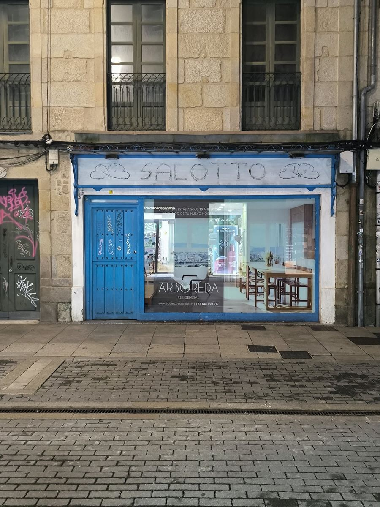

Sitúese en la acera de enfrente del escaparate «SALOTTO», de cara a él. Móvil en vertical, a la altura del pecho.
Ubicación
—
Pulse «Activar ubicación».
Encaje el marco naranja en el cristal del escaparate y la línea en el borde inferior del rótulo. La foto fantasma le ayuda.

Nivel: —GPS —
El Pianista repite una misma frase, como si quisiera decirle algo.
Prueba técnica: ubicación, cámara, alineación y vídeo dentro del cristal. El vídeo es provisional (animación sepia); en el juego será el café de los años 40 con el Pianista.